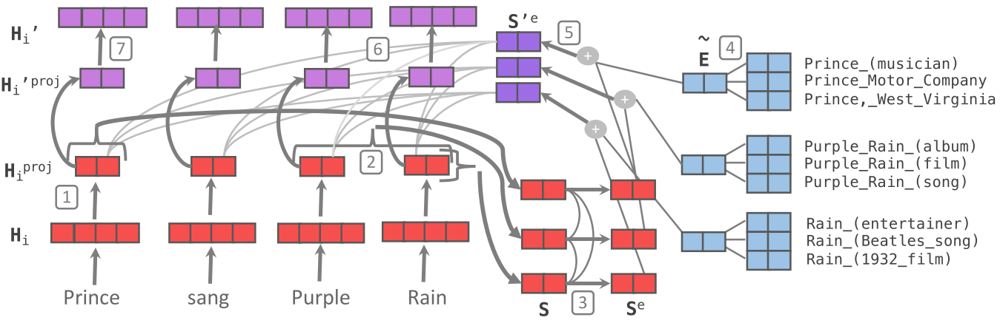
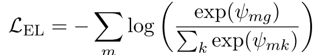
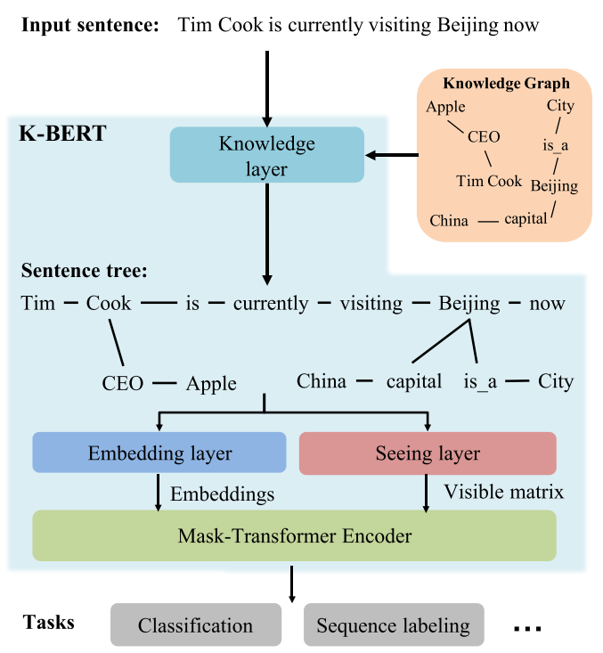

知识图谱入坑笔记
Table of Contents
- 1. 知识图谱本身
- 2. 近年来将知识图谱用于预训练模型的相关工作
1 知识图谱本身
1.1 在知识图谱之前，有待了解的一些基本知识
1.1.1 实体（entity）、本体（ontology）、与模式（schema）
这三个词汇有点像是从哲学中舶来味道，本质上都是对存在的一种抽象。下面依次简单介绍之。
实体是一种对象。它本身更像是一种静态的东西，但是却从动态（谓词）的结果中反应其特点。一个实体本质上就是在各个属性维度上取了一些值（实体）的集合。 可以用JAVA等编程语言中的对象或者数据库中每一个表里的一条来进行理解。实体就是实例（instance）。
本体是对实体的特点和行为的的抽象。（另一个定义：本体是对概念和关系的形式化表述）。同样用面向对象理解，class的定义就是对应object的本体。
模式（schema）是数据库名词。一个数据库（也就是表的集合）就是一个schema。
下文介绍的RDF主要是在实体层面，RDFS主要是在schema层面。
1.1.2 RDF（Resource Description Framework） 资源描述框架
参考链接：
1.1.2.1 基本要素
资源描述框架是干什么的？
描述资源的！
资源是什么？
资源是对象！对，资源就是对象。
所以，RDF本质上类似于面向对象编程语言中对对象的封装，也就是， 使用各种属性和对应的属性值来描述一个实体 。
因此，一个RDF本质上包括：
- 资源（R）。也就是对象。
- 属性（Realtion)。描述了资源之间的关系。
但是，光有这两点显然还是不够的，资源提供了一个个的节点，而属性提供了节点的连接，所以应该最后还有一个描述的操作，被称作声明。
RDF中存储的就是声明。声明主要是包括了（资源，属性，值）的一个三元组。而此处的“值”，当属性为“谓词”的时候，为一个资源对象。 但是，值未必一定是实体，也可能是构成实体的“原子值”（当然这也是一种特殊的实体），原子值在绝大多数时候是字符串）。
那么，整个知识图谱只剩下了最后一步，如何查询（寻找）这些资源或者属性？
辨识的方式是基于URL进行的。可 以网络中的URL进行理解。所以，一个声明（一个三元组）本质上就是存储了三个URL的列表。
一般而言，URL按类型还可以继续分为：
- IRI（international Resource Identifies），类似于一般意义上的index；
- blank nodes，空白；
- literals。原子值中最大的一种。
1.1.2.2 声明也是一种对象，图也是一种资源
刚才说过，一个实体可以有多个属性，这样不同的实体就可以彼此连接起来，形成一张巨大而稀疏的图，这和知识图谱具有了结构上的一致。 一般而言，这张图是有向的，从主体（subject）借助关系（谓词，predicate）指向客体（object）。这样的图往往只适合用三元组 进行表达，而非邻接矩阵等东西。因为两个节点之间可以有1000条边。
一般而言，在知识图谱中，资源用圆圈表示，谓词用方框表示.
那么，对于这样的一个图——也就是一个声明的集合——一个三元组的集合，能否把它也看做一个实体呢？
首先，单个的一个声明是可以看作一个实体的，它有三个属性（主体、谓词、客体）。 一张图其实也可以看作一个实体，这里就有了一些meta的味道。
1.1.2.3 RDF常用语法
1.1.2.3.1 Turtle .ttl文件
下图展示了一个基本的三元组：
<http://www.semanticwebprimer.org/ontology/apartments.ttl#BaronWayBuilding> <http://dbpedia.org/ontology/location> <http://dbpedia.org/resource/Amsterdam>.
可以看出：
- 每一行都是URL。
- 最后以句号结束。
下面展示一个带原子值的：
<http://www.semanticwebprimer.org/ontology/apartments.ttl#BaronWayAppartment> <http://www.semanticwebprimer.org/ontology/apartments.ttl#hasNumberOfBedrooms> "3"^^<http://www.w3.org/2001/XMLSchema#integer>.
可以发现，原子值被放在了双引号内，后面有URL展示其数据类型。
在此基础上，主要诞生了以下语法：
- 缩写。类似于C++中的明明空间的概念，可以用一个简段的符号把上面例子中的重复部分做映射，使用命名空间的方式进行定义；
- 省略主体。如果主体相同，声明之间可以用分号隔开，省略主语；
- 省略主体和为词。如果主体和谓词相同，声明之间可以用逗号隔开，省略主体和谓词；
- 为声明或图定义URL。使用大括号获得一个声明集合的对象化。
详情可以参考这篇笔记： 知乎-语义网络基础笔记1
1.1.2.3.2 XML语言
例子如下：
<?xml version="1.0" encoding="utf-8"?> <rdf:RDF xmlns:dbpedia-owl="http://dbpedia.org/ontology/" xmlns:dbpedia="http://dbpedia.org/resource/" xmlns:rdf="http://www.w3.org/1999/02/22-rdf-syntax-ns#" xmlns:swp="http://www.semanticwebprimer.org/ontology/apartments.ttl#"> <rdf:Description rdf:about="http://www.semanticwebprimer.org/ontology/apartments.ttl#BaronWayAppartment"> <swp:hasNumberOfBedrooms rdf:datatype="http:www.w3.org/2001/XMLSchema#integer"> 3 <swp:hasNumberOfBedrooms> </rdf:Description>
1.1.3 RDFS ——RDF Schema
1.1.3.1 与RDF的区别
如果说RDF是在对对象进行的操作的话，那么RDFS就是在对类进行操作。这就是二者的区别。
可以简单用下图作为区别式的理解：

1.1.3.2 基本语法
现以这篇笔记为例展示其基本语法。
@prefix rdfs: <http://www.w3.org/2000/01/rdf-schema#> . @prefix rdf: <http://www.w3.org/1999/02/22-rdf-syntax-ns#> . @prefix : <http://www.kg.com/ontology/> . ### 这里我们用词汇rdfs:Class定义了“人”和“地点”这两个类。 :Person rdf:type rdfs:Class. :Place rdf:type rdfs:Class. ### rdfs当中不区分数据属性和对象属性，词汇rdf:Property定义了属性，即RDF的“边”。 :chineseName rdf:type rdf:Property; rdfs:domain :Person; rdfs:range xsd:string . :career rdf:type rdf:Property; rdfs:domain :Person; rdfs:range xsd:string . :fullName rdf:type rdf:Property; rdfs:domain :Person; rdfs:range xsd:string . :birthDate rdf:type rdf:Property; rdfs:domain :Person; rdfs:range xsd:date . :height rdf:type rdf:Property; rdfs:domain :Person; rdfs:range xsd:int . :weight rdf:type rdf:Property; rdfs:domain :Person; rdfs:range xsd:int . :nationality rdf:type rdf:Property; rdfs:domain :Person; rdfs:range xsd:string . :hasBirthPlace rdf:type rdf:Property; rdfs:domain :Person; rdfs:range :Place . :address rdf:type rdf:Property; rdfs:domain :Place; rdfs:range xsd:string . :coordinate rdf:type rdf:Property; rdfs:domain :Place; rdfs:range xsd:string .
上面我们定义了person和place两个东西——用三元组定义的。我们在定义他们的时候，他们同样也是实体，但在我们使用他们时，他们成了类。
简单列举一下可能用到的一些约定：
- 核心类：
- rdfs：Resource，所有资源的类；
- rdfs:Class,所有类的类
- rdfs:domain, 属于哪个类
- rdfs:range, 类型
- rdfs:Literal，所有文字(字符串)的类。
- rdf:Property，所有属性的类。
- rdf:Statement，所有具体化声明的类。
- 核心属性：
- rdf:type，将一个资源关联到它的类。该资源被声明为该类的一个实例。
- rdfs:subClassOf，将一个类关联到它的超类。一个类的所有实例都是它的超类的实例。注意，一个类可能是多个类的子类。
- rdfs:subPropertyOf，将一个属性关联到它超属性中的一个。
- rdf:subject，讲一个具体化声明关联到它的主语。
- rdf:predicate，将一个具体化声明关联到它的谓语。
- rdf:object，讲一个具体化属性关联到它的宾语。
个人观点：随着实体的复杂，一个实体可以属于无数个类，或者说，大量的有限多个类。跨领域很重要。所谓的层次结构，并不天然适合描述 实体。实体是复杂的，一个层次结构仅仅是一个角度上的投影。
另外，谈论到这里，可以挖掘到过去的一些符号主义的影子。什么叫符号？ Place 和 Person就是符号。因为他们本质上不过是string， 却同时有类的值和实体的类两种特征。
下图可以更明白地区分两种层次：

参考链接：
现在可以呈上一个架构图，看看我们到底走了多远：

1.1.4 OWL Ontology of Web Language
从schema走出来之后，我们看看另一种更为严格一点的封装方式，被称作OWL。 同样地，先给出一段示例代码：
@prefix rdfs: <http://www.w3.org/2000/01/rdf-schema#> . @prefix rdf: <http://www.w3.org/1999/02/22-rdf-syntax-ns#> . @prefix : <http://www.kg.com/ontology/> . @prefix owl: <http://www.w3.org/2002/07/owl#> . ### 这里我们用词汇owl:Class定义了“人”和“地点”这两个类。 :Person rdf:type owl:Class. :Place rdf:type owl:Class. ### owl区分数据属性和对象属性（对象属性表示实体和实体之间的关系）。词汇owl:DatatypeProperty定义了数据属性，owl:ObjectProperty定义了对象属性。 :chineseName rdf:type owl:DatatypeProperty; rdfs:domain :Person; rdfs:range xsd:string . :career rdf:type owl:DatatypeProperty; rdfs:domain :Person; rdfs:range xsd:string . :fullName rdf:type owl:DatatypeProperty; rdfs:domain :Person; rdfs:range xsd:string . :birthDate rdf:type owl:DatatypeProperty; rdfs:domain :Person; rdfs:range xsd:date . :height rdf:type owl:DatatypeProperty; rdfs:domain :Person; rdfs:range xsd:int . :weight rdf:type owl:DatatypeProperty; rdfs:domain :Person; rdfs:range xsd:int . :nationality rdf:type owl:DatatypeProperty; rdfs:domain :Person; rdfs:range xsd:string . :hasBirthPlace rdf:type owl:ObjectProperty; rdfs:domain :Person; rdfs:range :Place . :address rdf:type owl:DatatypeProperty; rdfs:domain :Place; rdfs:range xsd:string . :coordinate rdf:type owl:DatatypeProperty; rdfs:domain :Place; rdfs:range xsd:string .
从上面可以看出，该段代码同RDFS最大的区别在于对关系的定义。OWL细化了关系，最基本的，OWL将关系划分为两个层面：
- 数据属性。 也就是结果是一个原子值的那些属性；
- 对象属性。结果也是一个实体的属性。
如果我们也把他画成一个图的话：

1.1.4.1 OWL的推理与知识图谱补全
OWL的优势在于推理。主要包括以下推理：
- 基于谓词逻辑的推理。 暂略，有时间专门写笔记填坑。
- 知识图谱补全。主要是根据关系之间的关系。比如，如果A是B的爸爸，那么B肯定是A的儿女。
- 本体映射。主要应用在知识图谱融合。比如，判断两个类是否是同一个，两个实体是否是同一个，连个属性是否是同一个等等。
所有的基于规则的推理，大约都是可以应用在这种三元组上的。
1.1.5 SPARQL： RDF的Query Language
在做查询之前，先想一个一个问题，我们要查的是什么？
答案： 三元组。一个或一些三元组。
那么我们有什么可以用来去查？
答案：主体，客体，谓词。
所以，所做的查询大概是这样的一类事物：通过一系列条件构成一个查询的图模式，寻找所有可能的候选项，返回结果。
下面是最简单的只针对一个三元组的同时对三个要素都无任何要求的查询：
SELECT * WHERE { ?s ?p ?o }
复杂一点的，下列链接中给的例子，“周星驰出现了哪些电影？”
SELECT ?n WHERE { ?s rdf:type :Person. ?s :personName '周星驰'. ?s :hasActedIn ?o. ?o :movieTitle ?n }
上面的一段代码，可以用这样的一个逻辑去思考：
- s 满足 Person 这个类型要求；（第一句话也是一个三元组）
- s 的名字是 “周星驰”；
- s 在 o 里参与演出；
- o 的名字是 n；
- 返回n；
在4和5之间，有一步，是找到了所有的o的名字是n的集合，然后才是返回n这最后一步。
其中，如果我们再看一下代码，可以发现变量前面有一个问号，这是模板匹配相关的基本语法。我觉得还好，比shell中的变态程度低一点。
详情请见： 参考链接1
下图展示的是一个实实在在的例子，即“查询主体名为Peking、谓词为abstract的客体”，说人话，就是对Peking的摘要介绍。

代码网址：基于sparql的查询操作
1.2 知识图谱相关数据集归纳
本节首先介绍当前世界范围内知名的高质量大规模开放知识图谱，包括
- DBpedia
- Yago
- Wikidata
- BabelNet
- ConceptNet
- Microsoft Concept Graph
- 中文开放知识图谱平台 OpenKG。
1.2.1 DBpedia
github 主页：https://github.com/dbpedia
DBpedia 是一个大规模的多语言百科知识图谱，可视为是维基百科的结构化版本。 DBpedia 使用固定的模式对维基百科中的实体信息进行抽取，包括 abstract、infobox、category 和 page link 等信息。 DBpedia 目前拥有 127 种语言的超过两千八百万个实体与数亿个 RDF 三元组，并且作为链接数据的核心， 与许多其他数据集均存在实体映射关系。 DBpedia 支持数据集的完全下载。
1.2.2 Yago
项目地址： yago
下载地址在这里。
也可以分类下载。类别如下面所示。
- TAXONOMY: All types of entitites, and the class structure of YAGO.
Moreover, it has formal definitions of YAGO relations.
- SIMPLETAX: An alternative, simpler taxonomy of YAGO.
- CORE: Core facts of YAGO, such as the facts between entities,
the facts containing literals,i.e., numbers, dates, strings, etc.
- GEONAMES: Geographical entities, classes taken from
- META: Temporally and spatially scoped facts together with statistics
and extraction sources about the facts.
- MULTILINGUAL: The multilingual names for entities.
- LINK: The connection of YAGO to Wordnet, DBPedia, etc.
- WIKIPEDIA: Multilingual infobox attributes, templates, sources, etc. for Wikipedia infoboxes.
OTHER: Miscellaneous features of YAGO, such as Wikipedia in-outlinks, GeoNames data etc.
Yago 是一个整合了维基百科与 WordNet的大规模本体，它首先制定一些固定的规则对维基百科中每个实体的 infobox 进行抽取， 然后利用维基百科的category进行实体类别推断（Type Inference）获得了 大量的实体与概念之间的 IsA 关系（如：“Elvis Presley” IsA “American Rock Singers”）， 最后将维基百科的 category 与 WordNet 中的 Synset（一个 Synset 表示一个概念）进行映射， 从而利用了 WordNet 严格定义的 Taxonomy 完成大规模本体的构建。 随着时间的推移，Yago 的开发人员为该本体中的 RDF 三元组增加了时间与空间信息， 从而完成了 Yago2[98]的构建，又利用相同的方法对不同语言维基百科的进行抽取，完成了 Yago3[99]的构建。 目前，Yago 拥有 10 种语言约 459 万个实体，2400 万个 Facts，Yago 中 Facts的正确率约为 95%。Yago 支持数据集的完全下载。
1.2.3 wikidata
目前找到的下载地址在这里
wikidata里面存储的实体是简化版的URL，这让我对他的可读性产生了质疑。
我从网上找到了一个Wikidata的python的API，地址在这里。不过看起来不怎么好用？这是一段示例代码：
>>> from wikidata.client import Client >>> client = Client() # doctest: +SKIP >>> entity = client.get('Q20145', load=True) >>> entity <wikidata.entity.Entity Q20145 'IU'> >>> entity.description m'South Korean singer and actress' >>> image_prop = client.get('P18') >>> image = entity[image_prop] >>> image <wikidata.commonsmedia.File 'File:KBS "The Producers" press conference, 11 May 2015 10.jpg'> >>> image.image_resolution (820, 1122) >>> image.image_url 'https://upload.wikimedia.org/wikipedia/commons/6/60/KBS_%22The_Producers%22_press_conference%2C_11_May_2015_10.jpg'
我还找到了其他的一些wikidata使用工具的项目主页。比如这个toolkit的项目主页，不过这个toolkit使用java写的。
感觉使用wikidata的论文有很多，但是究竟如何去使用它仍然是一个谜。
Wikidata 是一个可以自由协作编辑的多语言百科知识库，它由维基媒体基金会发起， 期望将维基百科、维基文库、维基导游等项目中结构化知识进行抽取、存储、关联。 Wikidata 中的每个实体存在多个不同语言的标签，别名，描述，以及声明（statement）， 比如 Wikidata 会给出实体“London”的中文标签“伦敦”，中文描述“英国首都”以及图 3 给出了一个关于“London”的声明的具体例子。 “London”的一个声明由一个 claim 与一个 reference 组成， claim 包括property:“Population”、value:“8173900”以及一些 qualifiers（备注说明）组成， 而 reference 则表示一个 claim 的出处，可以为空值。 目前 Wikidata 目前支持超过 350 种语言，拥有近 2500 万个实体及超过 7000 万的声明[100]， 并且目前 Freebase 正在往 Wikidata 上进行迁移以进一步支持 Google 的语义搜索。Wikidata 支持数据集的完全下载。
1.2.4 ConceptNet
ConceptNet 是一个大规模的多语言常识知识库，其本质为一个以自然语言的方式描述人类常识的大型语义网络。 ConceptNet 起源于一个众包项目 Open Mind Common Sense， 自 1999 年开始通过文本抽取、众包、融合现有知识库中的常识知识以及设计一些游戏从而不断获取常识知识。 ConceptNet 中共拥有 36 种固定的关系，如 IsA、UsedFor、CapableOf 等， 图 4 给出了一个具体的例子，从中可以更加清晰地了解 ConceptNet 的结构。 ConceptNet 目前拥有 304 个语言的版本，共有超过 390 万个概念，2800 万个声明（statements，即语义网络中边的数量）， 正确率约为 81%。另外，ConceptNet 目前支持数据集的完全下载。
1.2.5 Microsoft Concept Graph
Microsoft Concept Graph 是一个大规模的英文 Taxonomy， 其中主要包含的是概念间以及实例（等同于上文中的实体）概念间的 IsA 关系， 其中并不区分 instanceOf 与 subclassOf 关系。 Microsoft Concept Graph 的前身是 Probase，它过自动化地抽取自数十亿网页与搜索引擎查询记录， 其中每一个 IsA 关系均附带一个概率值， 即该知识库中的每个 IsA 关系不是绝对的，而是存在一个成立的概率值以支持各种应用， 如短文本理解、基于 taxonomy 的关键词搜索和万维网表格理解等。 目前，Microsoft Concept Graph 拥有约 530 万个概念，1250 万个实例以及 8500 万个 IsA 关系（正确率约为 92.8%）。 关于数据集的使用，MicrosoftConcept Graph 目前支持 HTTP API 调用，而数据集的完全下载需要经过非商用的认证后才能完成。
1.2.6 特定的中文知识图谱
1.2.6.1 Zhishi.me
下载地址： http://openkg1.oss-cn-beijing.aliyuncs.com/470c372e-9b16-4076-9101-5696fa4f810d/zhishime-ttl.zip
论文地址： http://iswc2011.semanticweb.org/fileadmin/iswc/Papers/In-Use/70320209.pdf
Zhishi.me 是第一份构建中文链接数据的工作， 与 DBpedia 类似，Zhishi.me 首先指定固定的抽取规则对百度百科、互动百科和中文维基百科中的实体信息进行抽取， 包括 abstract、infobox、category 等信息； 然后对源自不同百科的实体进行对齐，从而完成数据集的链接。 目前 Zhishi.me 中拥有约 1000 万个实体与一亿两千万个 RDF 三元组，所有数据可以通过在线 SPARQL Endpoint 查询得到。
1.2.6.2 Zhishi.schema
Zhishi.schema 是一个大规模的中文模式（Schema）知识库，其本质是一个语义网络， 其中包含三种概念间的关系，即equal、related与subClassOf关系。 Zhishi.schema抽取自社交站点的分类目录(Category Taxonomy)及标签云（Tag Cloud）， 目前拥有约40万的中文概念与150万RDF三元组，正确率约为84%，并支持数据集的完全下载。
1.2.6.3 XLore
1.2.6.4 中文开放知识图谱平台
从上面可以找到各种知识图谱相关的数据。 http://openkg.cn/home
2 近年来将知识图谱用于预训练模型的相关工作
2.1 将知识嵌入到预训练模型中常常存在的两个问题:
2.1.1 嵌入空间不同
KG的embedding space和预训练模型的embedding space隶属于两种space.
目前一般的做法是使用一个可学习的线性映射对二者进行对齐.
2.1.2 知识噪声
太多的知识集成反而会破坏掉输入句子的语义.
2.2 隐式融合的相关工作
2.2.1 ERNIE
ERNIE是THU 刘致远组的工作，也是比较早将知识图谱和BERT进行融合的论文。 其融合方法的核心思路是构建了一个类似于Transformer Encoder模块的知识融合encoder模块。 主要步骤包括：
- 根据自然语言语句查询得到对应实体；
- 将自然语言语句中的token与知识图谱对应的实体进行对齐；
- 融合；
- 得到新的自然语句中token的表示与知识中实体的表示，以用于下一层。
刚刚描述的是一个K-Encoder模块（也就是知识融合模块）的功能。给一个直观点的图：

现对其各个步骤进行更详尽的叙述。
2.2.1.1 模型输入
seqence的输入比较简单，就是各token的各层次embedding（如位置、段、语义等等）在组合之后进入T-encoder模块； 知识的输入只有实体，实体的表示使用的是transE算法。
2.2.1.2 知识融合
ERNIE的知识融合，只是在sequence中和实体相同意义的token之间完成的。比如在上图中，bob这个名字，和实体一致，所以二者才会融合。 像wrote这种词是不会进行融合的。
一般而言，这种寻找类似名字实体的工作，被叫做对齐（alignment）。 论文中使用的方法比较简单，即训练一个线性层+softmax进行实体对齐。

在此处，作者还借助于MLM任务对实体对齐进行了进一步的训练，但是我好像不太理解这种训练的意义……
对于那些进行了融合的词，其操作是：

对于没有东西进行融合的，其操作是：

注意到，一共有四个映射矩阵，外加两个偏移修正。
σ 指的是GELU函数。
2.2.2 Know-BERT
Know-BERT的思路和ERNIE有一点相似，但在结合方式等诸多层面上进行了改动。笔者在阅读有关knowBERT的论文时整体上是比较困惑的， 因此只能浅显地对该工作进行介绍。

上图展示了KnowBERT中words跟KG的结合方式。 其中，红色的部分显然是对sequence相关的处理，而蓝色的部分同KB相关，紫色则是二者的集合。
我们先对红色的部分进行介绍吧！首先，对于输入tokend表示H_i，论文先进行了一个映射

这种映射也是ERNIE等早期工作所有的。在此之后，则是一个实体识别+特征融合。此处即识别出Prince，Pruple Rain， Rain等三个实体， 也就是图中的S。然后再使用self-attention对这三个实体进行表示学习。由此而学到的是这三个实体彼此关联的文本表示。
在此基础上，蓝色部分作为知识登场了。论文描述了查询的细节，这个步骤在论文里被称作是entity candidate Selector。
大概是这样的一个数据结构：

即一个长度为C的序列，每个序列里包含两个东西——sequence中的位置元组，以及该位置元组对应的实体列表。前者用来描述sequence中哪些token构成了一个query； 后者用来描述，这个query的名字（也被称作是一个mention）究竟对应了知识库中的哪些实体，这样的实体，被认为具有k个。
例如，对于start_1=0，end_1=1这样的一个坐标，就会对应Prince这个mention，而该mention经过查询可以获得三个实体，Prince_musician, Prince_Motor_company 和Prince_west_blabla。
从中直接选择和文本相关的entity或许是困难的，所以论文中使用注意力机制直接将他们做了一个杂糅。这种杂糅在本质上是进行了一个加权和。也就是，先学习一个权重，然后基于权重将各实体的表示进行结合。
权重的获取方式是，首先，将token里的span表示（亦即mention的表示）与每个候选实体的表示做内积，然后送入一个二层全连接：

可以看出，为了选择合适的k，还需要结合先验知识P_mk，这是一个怪东西，论文里称之为（先验概率），但没有给出介绍。所以说，输入维度为2？ 论文里说隐藏层维度为100，而输出层的维度，显然是1.
对于这个MLP，如果确切知道mention对应了哪个entitiy的话，那么可以有监督地先训练一下。损失函数有以下两种设计方法：
极大似然：

交叉熵？：

总之，进行归一化，我们就得到了权重了！

将权重施加在k个candidate entity上，我们就可以得到知识这边的表示，也就是：

对于知识的表示和文本的表示的结合，作者的做法很简单，直接使用了加和，也就是：

这样，蓝色的部分也结束了，最后就是紫色的部分，在这里又做了一次所谓的融合。 论文把这个过程叫做recontextualizatin。管他怎么叫吧！总之，又进行了一次融合，融合方式是活久见的QKV。
公式如下：

可以看出，sequence那边的输入作为Q，然后融合后的东西作为K和V。可以看出，如果单单只有m个，K和V形成的注意力矩阵的长度是肯定和Seq不一样的。 所以猜测没有融合知识的那些东西，会有一个直达。
最后是所谓的反映射：

论文里特意把这个W_2初始化成是之前进行projection那个矩阵的逆矩阵，虽然……
总体代码流程：

此文中使用的知识图谱主要是wordNet这种。
顺便一提，文中的训练方法也进行了常见而细微的改进，毕竟有两个地方需要训练。这里的细节就不谈了。
爱情是默默受苦，不能倾诉，泛着黑暗里的莹莹绿光，不见太阳。 爱情是掐灭任何关于美好的希望，是充盈着希冀和思念，然后看着她不知有意无意拿针扎皮球，还要强忍不让这皮球把气流出来。 爱情是一个漏气还要用力鼓着、显得圆满的皮球。 我从别处获得充实，用睡眠休息，用论文放松，用运动疲倦。然后去安慰，去哄，我的伤心带来的结果，因为爱。或许我的失落，我的漏气，对她也是一根针。 漏气是因为我的脆弱，因为我不像篮球那般，而不是因为那个针——在美满中突然出现的、有意无意的针。 是不是如我这般脆弱，还不配拥有爱情。
2.2.3 KG-BART: Knowledge Graph-Augmented BART for Generative Commonsense Reasoning
2.2.3.1 论文基本信息
这篇论文是AAAI2021上的一篇文章，看作者有很多个大学，伊利诺伊大学芝加哥分校、华科、北航等等等等。 看题目，很容易理解这篇论文的目的：将KG和BART做了一个结合。BART是facebookAI去年（2020）发表的一篇工作，其模型结构同于 transformer，是一种encoder-decoder格式的模型（这种模式又在Google的T5上验证了其有效性），BART的出现是为了让PTMs既具有 BERT那种NLU的能力，同时也具有GPT那种NLG的能力。不过目前来看主要还是被应用在NLG相关任务上居多。
读该论文的题目的话，另一个或许会产生的问题就是“generative Commonsense Reasoning”是什么意思。一般而言，常识推理是指让计算机 具有和人类相同的常识所能解决的那类问题对应的技术。而此处的“生成式”常识推理，则是考虑在文本生成过程中可能会用到的一些常识。
为了验证论文模型中给出的常识推理的能力，作者全文实际上做的问题是“hard constrained NLG”。也就是，给定一个token集合，令模型 生成一段话，使得这段话里包含所有的输入集合中的token。
下图展示了这样的一个例子：

当我们给定河流，鱼，网，抓这几个词的时候，期待的结果应该是，一个渔夫在河边用网抓鱼。但是，如果缺少常识，就可能理解成“河中鱼在 抓网”这种东西。他们仍然是保持语法的，但是却显然不合常识，因为一般水平的鱼不会抓网。这篇论文就是试图解决这样的问题的。 作者解决此等问题的大致思路如下：
- 挖掘输入诸名词所对应的概念（concept）之间的关系。在conceptnet（也就是本文所使用的知识图谱，前面已经介绍过）中，这些实体
之间的关系可以被检索得到，通过一个三元组进行表达。而这样的一个三元组，本质上就是一个常识。比如river和fish之间，就有两种关系， 其中一条是：fish在river里。
2.2.3.2 结合前的模型
2.2.3.2.1 预训练模型
BART, 包含encoder和decoder两个部分.
2.2.3.2.2 知识图谱及其表示的提取方法
所使用的知识图谱是conceptNet, 前面已经有过介绍.
关于提取知识图谱中实体和关系对应的embedding的方法, 此处使用的是transE. transE用来为知识图谱中的实体和边学习一个向量表示.
其基本思路可如下图表示:

即: 默认实体和边的表示之中存在这样一种关系:头部+关系=尾部. 基于这种思路所定义的损失函数为:

从中可以看出,同一种relation, 找到对应三元组的一个正例和一个反例, 之后使用对比训练的方式进行就好了.
后续还会有一些工作, 将实体和关系置于两个空间, 而后使用一个矩阵做projection(也就是空间的对齐), 此处不再赘述.
2.2.3.3 结合方式及具体相关细节
2.2.3.3.1 概览
二者总体的结合方式可由下图表示:

从中可以看出, 在bart的encoder和decoder处都具有知识图谱的融合, 二者的轻微区别是:
- 对于G^R, 主要是用来进行概念推理(reasoning)的,因此与encoder进行结合,帮助对词义的更好理解.
因此,G^R中的三元组,头部与尾部的实体都是在输入中存在的word, 其表示为(V_i^R, r_{ij}^R, V_j^R);
- 对于G^E, 主要是用来进行文本生成的,因此与deocder进行结合,进行概念扩展(expanding).
因此, G^E中的三元组,头部的实体来自于输入(或与输入实体的邻居实体中),尾部的实体则是与之相关的一些修饰词. 换句话说,扩展知识图谱的输入,是那些由输入实体集合对应的邻居实体集合构成的并集中的实体们维护的三元组. 当一个输入实体对应很多个邻居实体时,通常采用word-embedding对应的similairity score选取topk个.
2.2.3.3.2 encoder部分结合细节

对于和知识图谱的结合,论文阐述的比较复杂. 现一一剖析之. 上图所展示的知识图谱增强的思路是这样的: 对于输入x(x是token序列,相当于word(subword)级别),需要先通过一个变换转化到concept级别,这之后才能同知识图谱代表的 知识进行融合. 而融合之后的结果,常常也需要再进行一个反过程,才能变成输入x的一个更新之后的结果. 上述过程就是x->SCI->MGAT(融合)->CSD->x'.
下面分别依照此对各个层次进行介绍.
- SCI
使用的是一维卷积+池化层.
- [重点]融合部分 Multi-head Graph Attention
融合部分使用的是GAT里的策略, 如下图所示.

其对应的基本操作包括:
- 对推理图谱对应的实体们使用W_e进行映射得到W_eV^R;
- 对预训练模型的表示序列e^w(维度是k*d_w, k是concept的个数,d_w是embedding的长度)和知识图谱的映射后的表示进行拼接;
- 将拼接后的结果, 在原知识图谱的结构上, 使用GAT的加和型注意力机制进行特征更新.
- CSD: Concept 2 subword
先使用上采样进行序列扩充, 之后使用反卷积(Deconv1D)进行扩充处理,之后再使用两层全连接做线性变换,最后接上GeLU和LayerNorm.
2.2.3.3.3 decoder部分结合细节

decoder部分的知识图谱和前面的推理图谱,除了内容上的不一致之外, 在结构上也有其自身的特点. 由于G^E的构建是始于输入中所带有的word的,所以其图的结构本质上是一个树,也就是层次结构. 因此,在进行融合之前,当我们使用TransE获取了该图谱的浅显表示之后,首先进行的是特征提取. 同样地基于GAT, 其基本步骤如下:
- 对整张知识图谱使用GAT进行特征提取,公式如下所示:

- 只对出现的那部分word对应的实体进行特征更新, 公式如下所示:

将得到的表示,也就是V^{R''},作为自注意力机制中QKV三件套里的K和V的输入(K常常等于V,在其他论文里同样如此);

当然,也包括正常的注意力机制(AT^{TX}).
把二者拼接在一起,使用一个线性变化,就可以得到最终的输出.

在上述整个过程中,预训练模型部分的输入是y,输出是y^o.
2.3 显式融合的相关工作
2.3.1 K-Adapter
K-adaptor在knowBERT，ERNIRE等论文的基础上又往前走了一步。从创新性上而言，K-Adapter的主要创新点在于其支持持续的知识注入（continual learning）， 也就是说，可以将多个知识图谱同时与PTM进行结合，并解决了在此过程中可能会出现的灾难性遗忘问题。主要而言，论文中对两类常见的知识图谱, 语言学上的知识（Lingustic Knowledge）和事实知识(Factual Knowledge)进行了建模和融合。整体框图如下图所示：

在本图的上半部分，也就是(a)，所绘为常见KG+PTM模型的样子。作为对比，K-adapter被描述为下面所示的样子。亦即，在Transformer Module的基础上（图中绿色）， 额外添加了新的固定的模块。此时原始的Transformer模块一直保持不变，仅仅是红色的用以进行融合的模块在发生变化。一个KIA就是一个adapter模块。 关于KIA与TRM模块结合的细节，后面会详细介绍，此处单知其可以融合。 由此一来，如果transformer的模块被固定住，KIA学习知识对应的表示，最终学到的这样的表示与预训练模型的表示做拼接，就可以实现知识注入了。训练的反向传播也是同理。
关于此处KIA的结构，其实主要是一个transformer模块，两边添加了一个projecttion layer，如下图所示：

一般而言，对于一个Transformer-Encoder模型，以ToBERTa为例，并不是每一个transformer都需要有一个KIA模块。一般而言，一个24层的transformer encoder， 论文中只在第0层（开始）、第11层（中间）、第23层（结尾）伴随了KIA。关于KIA与对应层数transformer模块的结合，细节是：
- 对于起始层，进入的是实体token；
- 对于除了起始层之外的其他层，输入是上一层KIA的输出与对应同层次TRM输出拼接的结果；
- 在面临该图谱对应的任务时，使用最后一层KIA的输出与PTM的输出的拼接作为表示。
特殊地，作者依照知识图谱对应的类型进行了更详细的介绍：
- 事实型知识图谱。使用的是T-REx数据集（Woc这个数据集我前面竟然没介绍过），该数据集建立了wikidata三元组同wikipedia句子之间的对齐。对应的训练任务
是关系分类，即输入两个实体，输出他们对应的关系。（此处的PTM应该是把对齐的句子作为输入输入进去了？）
- 语义知识图谱。主要是包含一些语法信息和语义信息的知识图谱。这里使用的数据集是斯坦福的一个叫做StandfordParser的东西，其基本介绍如下：
A natural language parser is a program that works out the grammatical structure of sentences, for instance, which groups of words go together (as "phrases") and which words are the subject or object of a verb. Probabilistic parsers use knowledge of language gained from hand-parsed sentences to try to produce the most likely analysis of new sentences. These statistical parsers still make some mistakes, but commonly work rather well. Their development was one of the biggest breakthroughs in natural language processing in the 1990s. You can try out our parser online.
论文中使用该工具进行了关系预测任务的学习。这个任务大概就是找到每个token的father index（？？？啥意思）。
2.3.2 K-BERT
同其他论文的思路不同,K-BERT通过维护一个良好的句子树来实现知识的嵌入。换而言之，所有的知识注入都是通过PTM自己完成的，而不是先有一个表示，再把该表示同seq的表示做融合。
K-BERT的核心idea可以用下图表达

从图中可以看出，当我们对输入句子的实体进行了子图提取，最终得到一个句子树之后，我们将所有的东西都投入进了PTM中。 下面这张图描述的更加详细：

在这张图里，一个句子树分别被进行了硬编码和软编码两种编码。其中，硬编码是句子输入进PTM的顺序，而软编码，则展示着整个句子树的所有路径。从token embedding 的形式可以看出，token按照hard-position进入了模型里，但是，其position embedding却是依照软编码而写的。换而言之，CEO这个谓词和is具有相同的位置编码。 一个句子树里所有的token，其segment embedding是一样的。
如果留心于上面的描述，可以发现硬编码并未从上面体现出来，是这样的。硬编码被体现在了mask attention的矩阵里。 同样如上图所示， mask attention的矩阵具有如下特点：
- 原始sequence里的所有token，彼此可见；
- 对于嵌入的知识，只在其三元组内部的token里彼此可见，在其他位置不可见。
当然，由于token之间彼此可见，其实另外一个三元组的知识最终也会被融入到每个token里，如下图所示：

但这篇论文做实验只是在拿BERT做对比，奇怪。